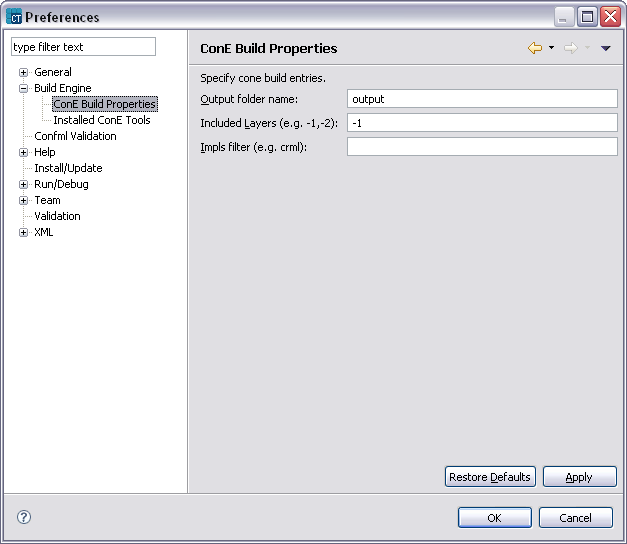
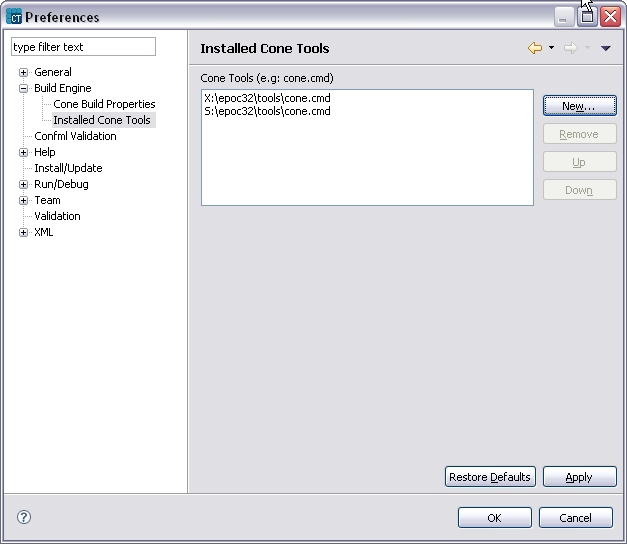
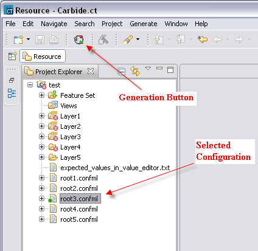
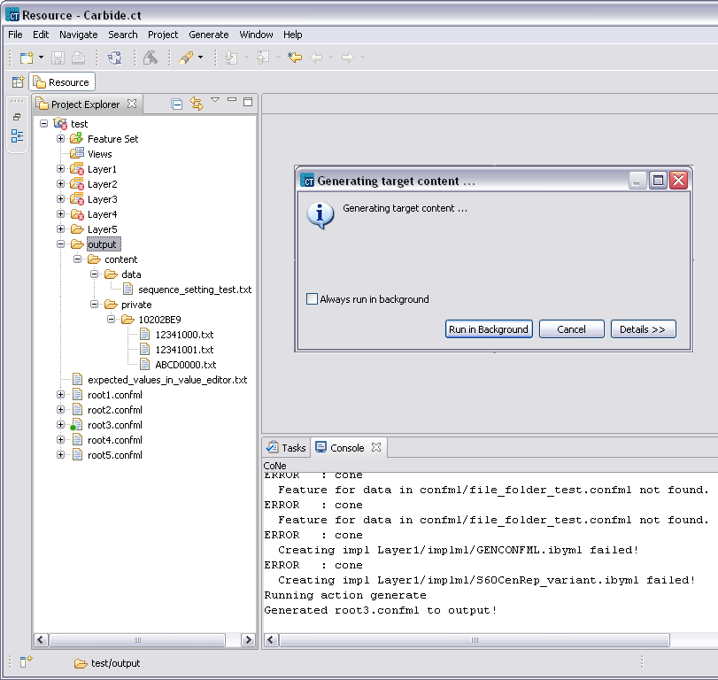

Generation Overview
With the generation functionality of Carbide.ct users can convert their Configuration Project structure, which
contains ConfMLs, implMLs and resources into a format usable by target platform application. Target in this case
can be some s60 emulator or a real phone hardware. This allows the user to verify his/her changes on the target platform.
The task of generating target files in Carbide.ct is performed by a tool called ConE (Configuration Engine).
ConE is a Python API for a Configuration Project. ConE tool is structured around the concept of plug-ins. Plug-ins are structured bundles of code and/or data that contribute function to the system.
This makes ConE highly extendable and customizable.
ConE tool can perform several operations on a Configuration Project. One of this is to take in a Configuration Project or to be precise a Configuration inside a Configuration Project and produce
a resource structure that can be taken to the target device, for example to the mobile hardware. We call this generation.
Preconditions of Generation
The following points must be fulfilled in order to generate successfully
- ConE tool must be installed on the user system
- Carbide.ct has to be configured to use ConE
Generation steps
Follow these steps to generate successfully
- Check that ConE tool is installed on your system. If not download it and install
- Configure Carbide.ct to use ConE. To do this select Window > Preferences

Figure 1 Carbide.ct preferences
In the preferences page select Build Engine. Under ConE Build Properties configure the output folder for the generated files, the layers to include in the output (-1=last layer)
and optionally the implimentation filters (e.g. crml, gcfml, ...).
Under the Installed ConE Tools item specify ConE installations.

Figure 2 Installed ConEs
If there are several ConEs in the list. The first one in the list will be used for the generation task.
- Once preferences are configured the target files can be generated as in the following figure:

Figure 2 Installed ConEs
Make sure the that you have a Configuration Project open (test in this case). Select the Configuration that you want to generate (root3.confml in the example) and then press Generate button in the tool bar.
- Verify generation output. Below figure show example generation output.

Figure 2 Installed ConEs
You can follow the generation process from Console view. Once the generation is finished you can verify the output in the output folder that you specified in the Preferences Page.